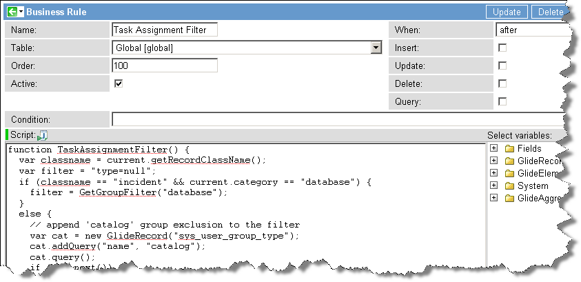

Configuring Group Types for Assignment Groups
| |
Note: This article applies to Fuji. For more current information, see Configure Group Types for Assignment Groups at http://docs.servicenow.com
The ServiceNow Wiki is no longer being updated. Please refer to http://docs.servicenow.com for the latest product documentation. |
Contents
1 Overview
The Type field can be used to define categories of Groups, which can be used to filter out assignment groups based on the group type using a reference qualifier on task.assignment_group.
For example, when selecting an assignment group from the Incident form, Type can be used to filter groups based on whether they are typically involved in the Incident Management process. Groups such as Network or Help Desk which typically are involved would be displayed, while groups such as HR or New York would be omitted.
In the base system:
- The type catalog is provided for use. The type survey is also provided, starting with the Eureka release.
- The reference qualifier on task.assignment_group filters on Type=null.
- A reference qualifier named GetGroupFilter is available to filter for group types.
| |
Note: With the introduction of Dictionary Overrides, administrators can filter for a group type on an extended table with a simple reference qualifier override. |
2 Defining Group Types
To define a group's type, navigate to User Administration > Groups and select the desired group. Enter one or more types in the Type field, separated by commas (no spaces). For example, to define a group's type as incident and problem, enter: incident,problem.
| |
Note: Because the default behavior of task.assignment_group is to filter out groups with group types defined, adding a type to a group will filter it out of the Assignment Group field on task. To change the behavior, see below. |
3 Setting Up the Reference Qualifier
The reference qualifier on task.assignment_group filters which groups are available to be used as an assignment group.
Note: changing the reference qualifier on task.assignment_group affects every table which extends the Task Table. Since Spring 2010 Stable 2, Dictionary Overrides can be used to define reference qualifiers on tables that extend Task without affecting other task tables.
There are two ways to use reference qualifiers to filter assignment group types:
3.1 Using a Simple Reference Qualifier
In the base system, the simple reference qualifier type=null is used to allow groups with no defined type to be selected.
In the same way, if there is one specific type which should be available from the Assignment Group, specify it in the same format. For example, if there is a group type assignment which all assignment groups have, use the reference qualifier type=assignment to return only those groups.
3.2 Using Advanced Reference Qualifiers
If a simple reference qualifier doesn't provide enough control over filtering, an advanced filtering function can be defined in a business rule and called using advanced reference qualifiers.
3.2.1 Using GetGroupFilter
The business rule GetGroupFilter (available in the base system) can be called by an advanced reference qualifier to filter group types based on arguments.
For example, the following reference qualifier would restrict the choice list to groups with type database or network:
javascript:GetGroupFilter('database,network')
The GetGroupFilter function can also be called from reference qualifier functions which you create.
3.2.2 Creating an Advanced Reference Qualifier
For more advanced filtering, create an Advanced Reference Qualifier for the Assignment Group field on theTask table. Note that this reference qualifier will apply to all tables based on Task, unless Dictionary Overrides are used.
The following example reference qualifier assumes that you have created a group type named 'database'. If the task is an incident record and the category is 'database', then the reference qualifier will only select database groups. In all other circumstances it will select any group which is not a catalog group.
Business Rule to define the Advanced Reference Qualifier

{kind=link}
function TaskAssignmentFilter() {
var classname = current.getRecordClassName();
var filter = "type=null";
if (classname == "incident" && current.category == "database") {
filter = GetGroupFilter("database");
}
else {
// append exclusion for 'catalog' to the filter
var cat = new GlideRecord("sys_user_group_type");
cat.addQuery("name", "catalog");
cat.query();
if (cat.next()) {
filter += "^ORtype!=" + cat.sys_id;
}
}
gs.log("TaskAssignmentFilter: " + filter);
return filter;
}
Once the business rule above is defined, it can be called by the following reference qualifier:
javascript:TaskAssignmentFilter()
3.3 Caution Regarding Tree Picker
Caution must be exercised if the Tree Picker is used in conjunction with group type filtering. The reference qualifier function must select groups at all levels of the tree since a group is only selectable if its parent is selectable.